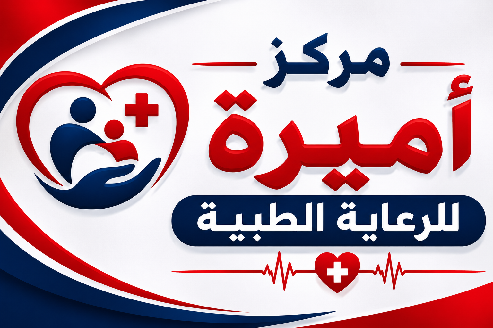
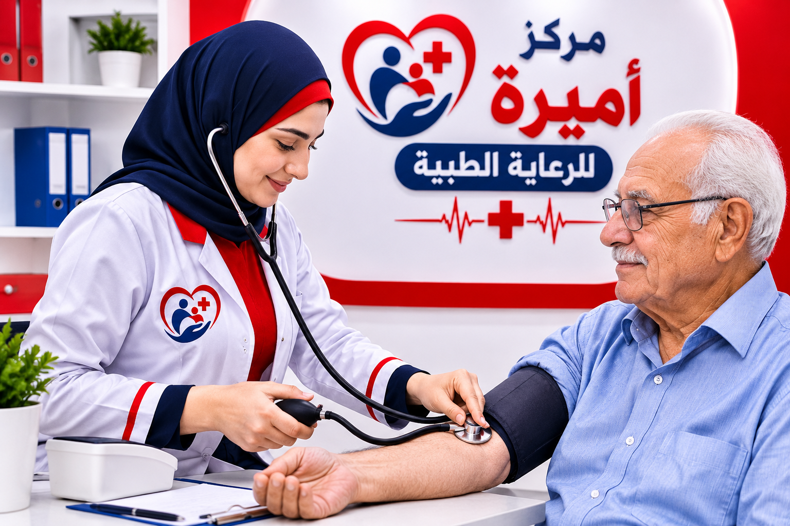
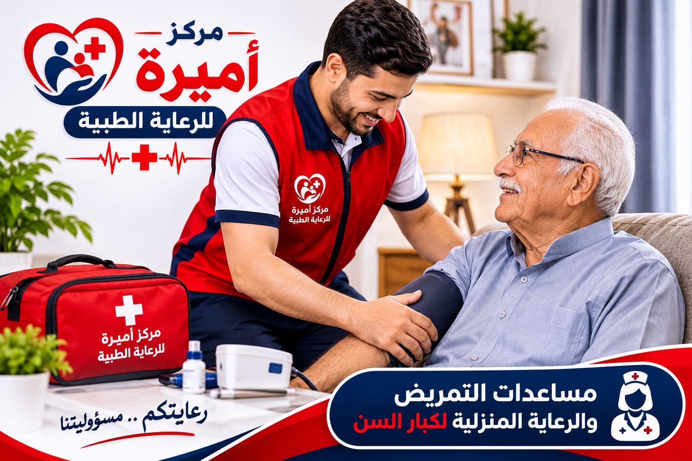
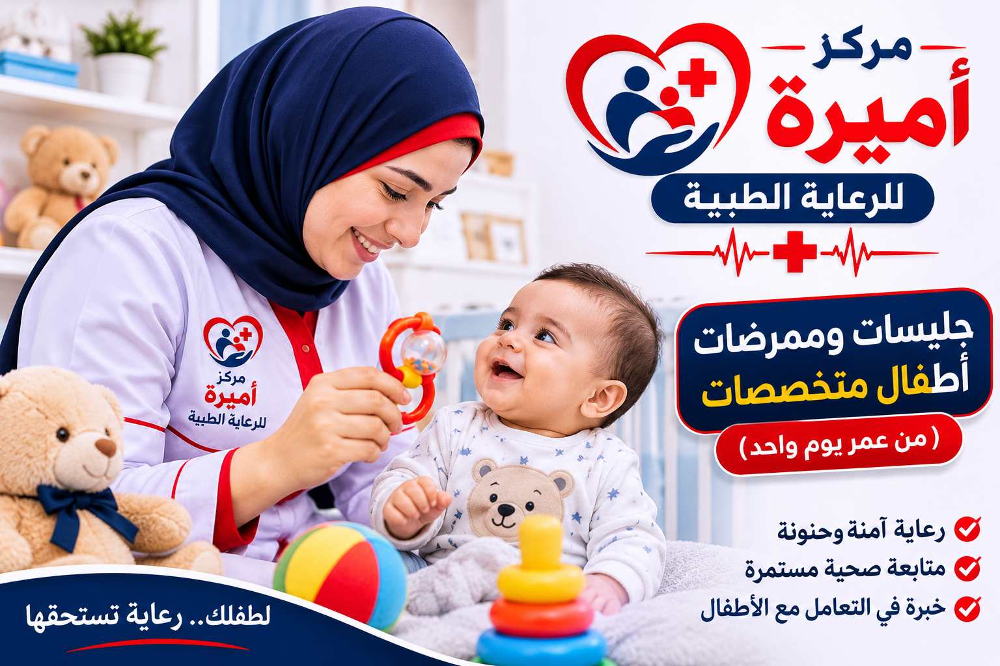
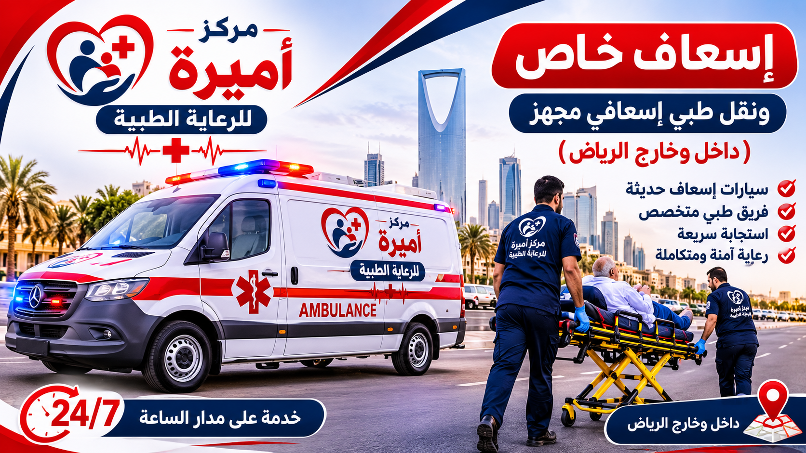
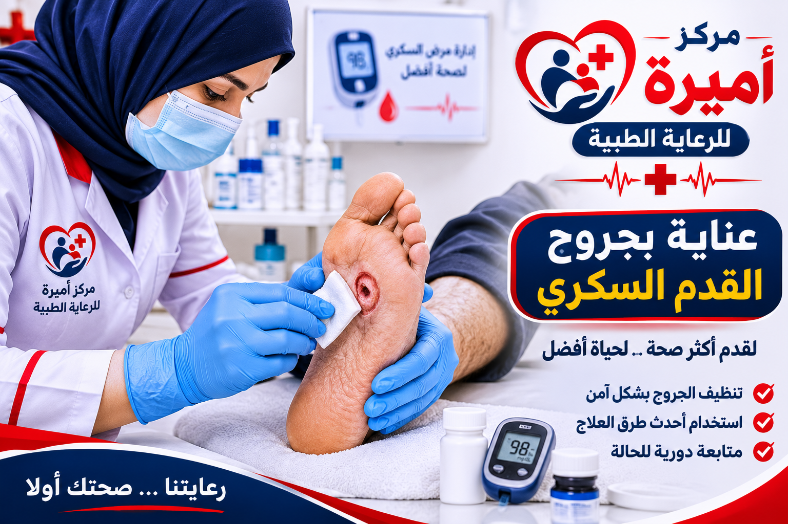

دليل العناية بجروح القدم السكري وقرح الفراش في المنزل
تعرف على أهم النصائح الطبية لتفادي مضاعفات تقرحات السكري وكيفية التغيير المعقم عليها بأمان تام في بيتك.
مركز أميرة للرعاية الطبية بالرياض يقدم خدمات تمريضية متقدمة، رعاية كبار السن، جليسات أطفال من عمر يوم، وأسطول إسعاف خاص مجهز داخل وخارج الرياض بأعلى معايير الأمان الطبي.
كوادر تمريضية وطبية مؤهلة ومرخصة رسمياً، حاصلة على خبرات متقدمة في مستشفيات الرعاية الحرجة والعناية المركزة لضمان أمان تام لمريضك.
نؤمن بحق الجميع في رعاية صحية راقية دون إثقال كاهل الأسرة. نقدم باقات مرنة، عروضاً دورية، وأسعاراً مدروسة وشفافة دون أي رسوم مخفية.
فريق خدمة العملاء واستشارات الطوارئ متواجد للرد على مدار الساعة. تواصل مباشر، تنسيق فوري للزيارات المنزلية، وحجز سيارات الإسعاف بدقائق.
بدء المحادثة الفورية
المزود الرائد للرعاية الطبية والتمريضية المنزلية وخدمات الإسعاف الخاص في مدينة الرياض والمملكة العربية السعودية.
انطلق "مركز أميرة للرعاية الطبية" انطلاقاً من إيماننا العميق بأن شفاء المريض وراحته النفسية يبدآن من بيئته المألوفة بين أفراد أسرته. لذلك وضعنا شعارنا الدائم #نرعاكم_كأهالينا ليكون بوصلة عملنا اليومي، حيث نجمع بين الاحترافية السريرية العالية واللمسة الإنسانية الدافئة.
نقدم 4 ركائز رئيسية في الرعاية الصحية المنزلية والنقل الطبي الإسعافي، مصممة خصيصاً لتلبي احتياجات المرضى وكبار السن والأطفال في الرياض.
نوفر لك كادراً تمريضياً وطبياً محترفاً لزيارتك في منزلك لتقديم كافة الإجراءات العلاجية بدقة متناهية ودون الحاجة لتكبد عناء الذهاب للمستشفى والانتظار الطويل.


آباؤنا وأمهاتنا يستحقون رعاية تفيض بالرحمة والاهتمام الطبي المتقن. نوفر مساعدات تمريض مؤهلات للإقامة أو بنظام الشفتات لمرافقتهم وتلبية احتياجاتهم.
أولى أيام الأمومة تتطلب سنداً خبيراً وعناية فائقة. نوفر ممرضات مؤهلات لرعاية المواليد الجدد والخدج ودعم الأمهات بعد الولادة الطبيعية أو القيصرية.


أسطول حديث من سيارات الإسعاف المجهزة بأحدث التقنيات الطبية والعناية المركزة، يقودها مسعفون وتمريض طوارئ معتمدون لنقل الحالات بأمان وراحة تامة.
صممنا باقات تمريضية مدروسة تناسب مختلف الحالات الطبية بميزانيات واضحة وشفافة. اضغط على أي باقة للاطلاع على التفاصيل الكاملة وحجزها مباشرة عبر واتساب.
مثالية لإجراء علاجي محدد وفوري في المنزل دون اشتراك طويل.
مساعدة تمريضية متخصصة بنظام الشفتات (12 أو 24 ساعة).
جليسة وممرضة متخصصة من عمر يوم واحد لدعم الأم والمولود.
حجز سيارات إسعاف مجهزة للمواعيد والتحويلات داخل وخارج الرياض.
نلتزم بأعلى البروتوكولات المعتمدة من وزارة الصحة والهيئة السعودية للتخصصات الصحية. انقر على أي إجراء طبي للاطلاع على خطوات تنفيذه ومعايير السلامة المتبعة.
غيار طبي معقم، تنظيف الجروح المزمنة، وتطبيق ضمادات السيليكون والفضة الطبية.
تطهير مجرى التنفس، استبدال الشاش والكانولا، والشفط الرئوي بأجهزة متنقلة معقمة.
تركيب الكانيولا بدقة وبدون ألم، إعطاء المغذيات والمضادات الحيوية بوصفة الطبيب.
قساطر فولي السيليكونية مع تطبيق كامل لتعقيم المسالك البولية وتفريغ الأكياس.
نسهل عليك الحصول على أرقى رعاية صحية من راحة منزلك دون أي تعقيد. تبدأ رحلتك معنا بمكالمة أو رسالة واحدة.
تواصل معنا مباشرة عبر الرقم 0568188397 واشرح احتياج المريض وطبيعة الخدمة المطلوبة.
يقوم المشرف الطبي بمراجعة الحالة الصحية وتحديد التخصص والوقت الأنسب الذي يريح أسرتك.
يصل الممرض أو الطبيب بكامل حقيبته المعقمة ومعداته لباب منزلك لتقديم الخدمة بأعلى معايير الإتقان.
تزويد العائلة بتقرير مفصل عن العلامات الحيوية والإجراء المنفذ مع استمرار المتابعة والتواصل اليومي.
نضع سلامة مرضاكم وراحتكم النفسية فوق كل اعتبار. انقر على أي بطاقة لقراءة ميثاق الجودة وسياسة الرعاية المعتمدة لدينا.
أدوات طبية معقمة ذات الاستخدام الواحد ومطهرات معتمدة تضمن صفر انتقال للعدوى في المنزل.
تدريب الكوادر على اللباقة العالية واحترام خصوصية الأسر والعادات والتقاليد الأصيلة.
تسعير عادل بدون أي مبالغات أو رسوم مخفية، مع باقات مخصصة لتخفيف الأعباء عن الأسر.
متابعة يومية من أطباء المركز لتقارير العلامات الحيوية والتأكد من مطابقة الخطة العلاجية.
مقالات طبية متخصصة ومبسطة يكتبها كادرنا الطبي لإرشاد العائلات حول الرعاية الصحيحة للمرضى وكبار السن والأطفال في المنزل.

الزيارات الطبيةتعرف على أهم النصائح الطبية لتفادي مضاعفات تقرحات السكري وكيفية التغيير المعقم عليها بأمان تام في بيتك.
إرشادات سريرية دقيقة للتعامل مع أنابيب التنفس وجلسات الشفط الرئوي والتغذية الأنبوبية لتفادي الاختناق والعدوى.
دليل الأمهات الجدد: تطهير السرة، التعامل مع صفار المواليد، تخفيف المغص والغازات، وتنظيم النوم بأمان.
الفرق بين النقل العادي والإسعافي، وكيف تختار سيارة الإسعاف المناسبة للحالات الحرجة ومراجعات المستشفيات.
طواقم التمريض موزعة استراتيجياً في كافة قطاعات العاصمة الرياض لسرعة الوصول لباب بيتك، بالإضافة لرحلات الإسعاف الخاص المجهزة بين الرياض والمدن الأخرى.
لدينا فرق متحركة على أهبة الاستعداد لخدمتك في أي وقت بالليل أو النهار.
جمعنا لكم أكثر التساؤلات شيوعاً التي تردنا من أهالي المرضى لتوفير كل المعلومات بشفافية ووضوح تام.
نفخر بثقة مئات العائلات التي شاركتنا رعايتها لأحبائها، ونسعد بأن نكون دائماً عند حسن ظنهم بشعارنا #نرعاكم_كأهالينا.
"تعاملت مع مركز أميرة لغيار جروح وقدم سكري للوالد رحمه الله، الممرض كان قمة في الأخلاق والاحترافية والتعقيم. وفروا علينا مشقة الذهاب للمستشفى أسبوعياً. بارك الله في جهودكم."
"طلبت جليسة مولود بعد ولادتي القيصرية، الممرضة كانت ممتازة جداً وأمينة وساعدتني في تنظيف السرة ومغص البيبي وخلتني أقدر أرتاح بالليل. شعارهم #نرعاكم_كأهالينا حقيقي 100%."
"احتاج الوالد سيارة إسعاف مجهزة لنقله لمستشفى بالدمام، كان التنسيق سريع جداً والسيارة حديثة ومريحة وطاقم الإسعاف تعامل باحترافية وأمان طوال الطريق. أفضل خدمة بسعر مناسب."
املأ النموذج المباشر لتحديد احتياجك وسيتواصل معك مشرفنا الطبي فوراً، أو يمكنك إرسال الطلب مباشرة كرسالة واتساب منسقة بضغطة زر واحدة.
سيتم تحويل بياناتك إلى محادثة واتساب جاهزة للإرسال فوراً لسرعة التنسيق.